Tattoos
Our tattoos are where we got started. They are our humble beginnings. Our catalogue is full of instant classics like “mermoosh” (a mermaid mushroom, with optional Russian cyrillic hand lettering) and “decalf” (a cow in the shape of ‘d,’ the letter).
We believe you are a canvas, and we are the artists. Tattoos are the message.By choosing Bunker.inks for your self-expression, you are doing more than just getting a tattoo. You are joining a movement of thinkers, doers, and believers.
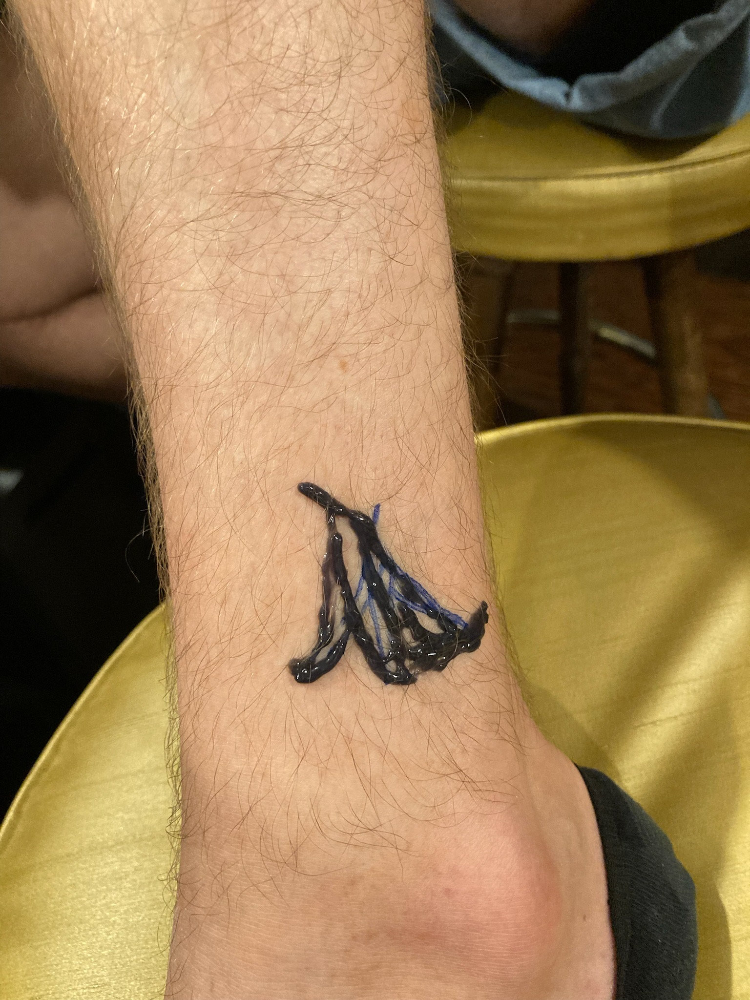 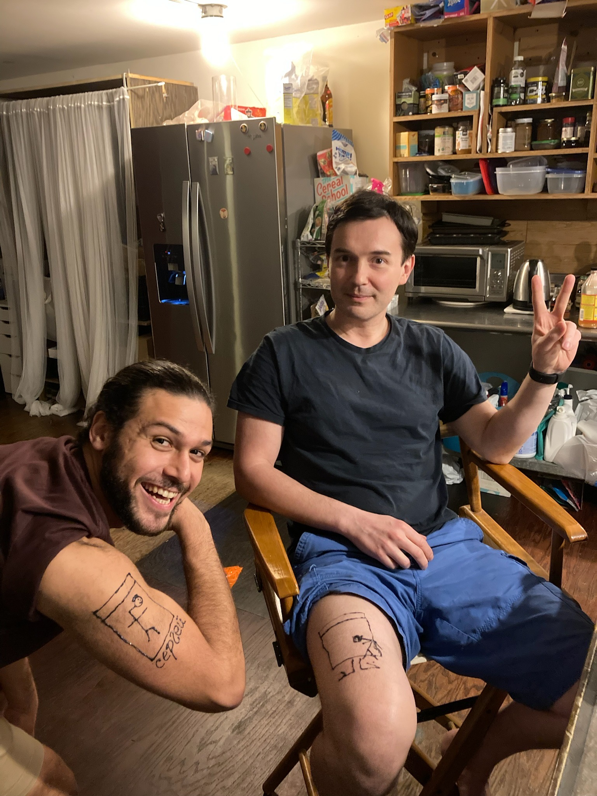 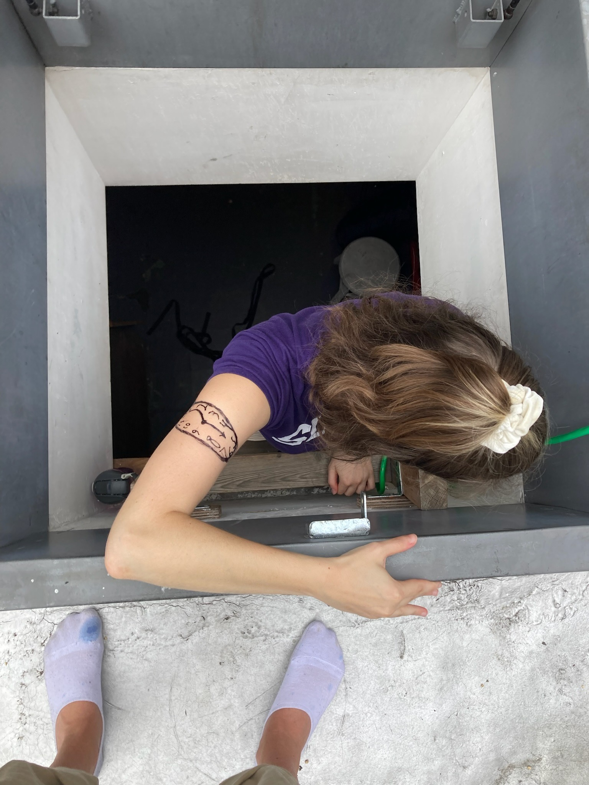 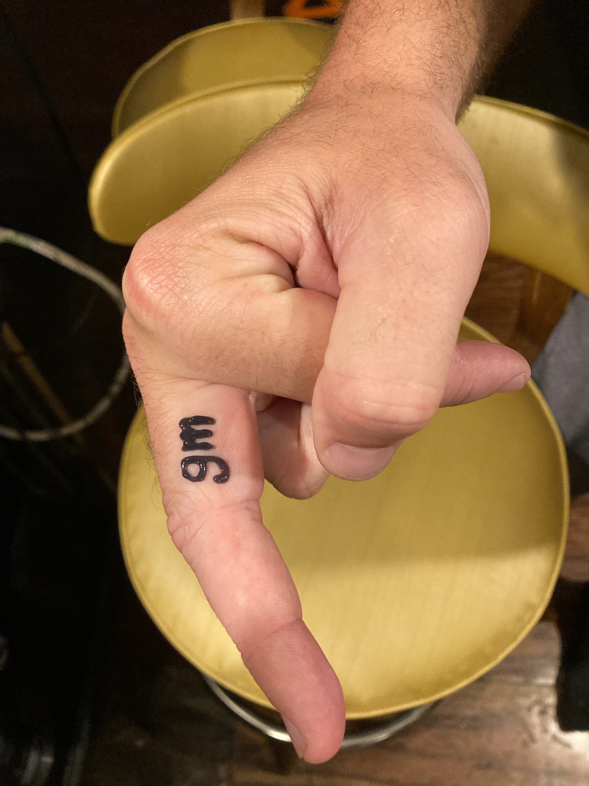 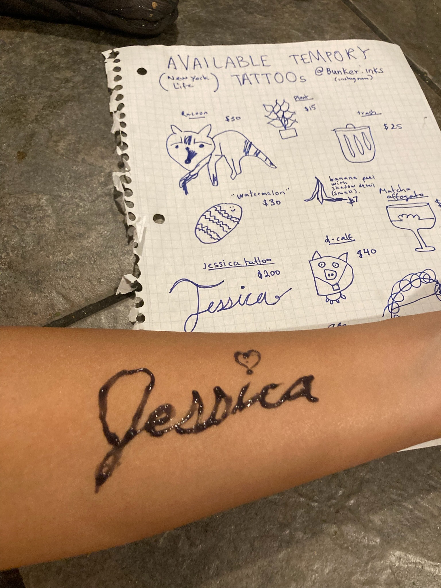 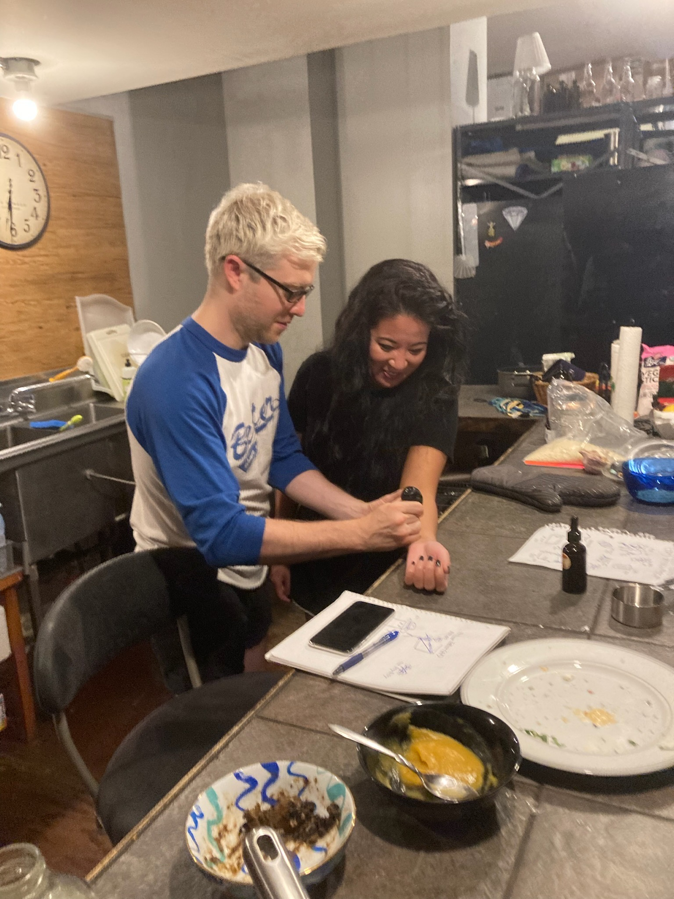 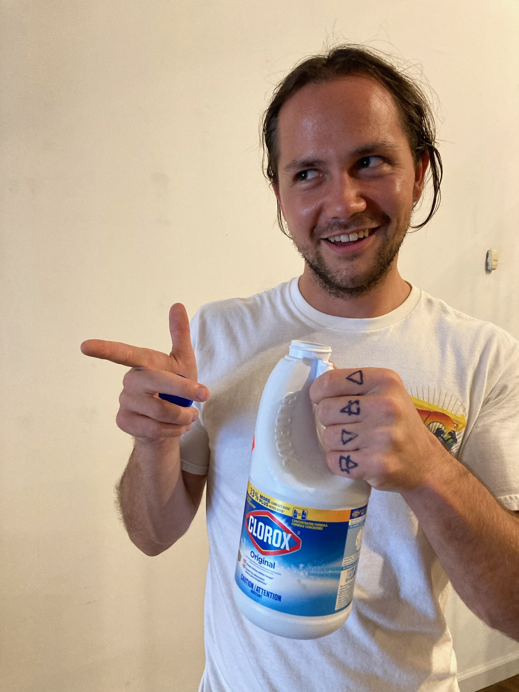 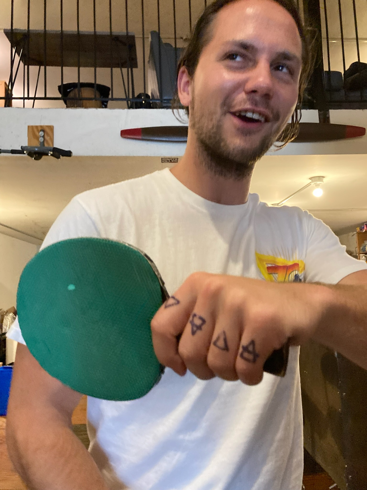 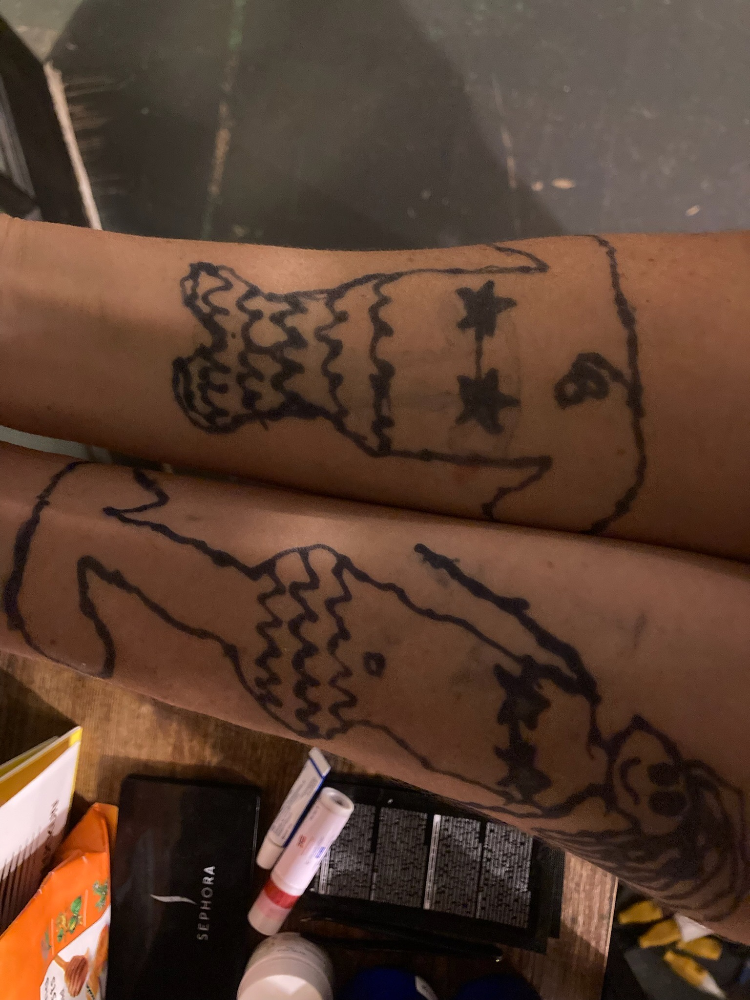 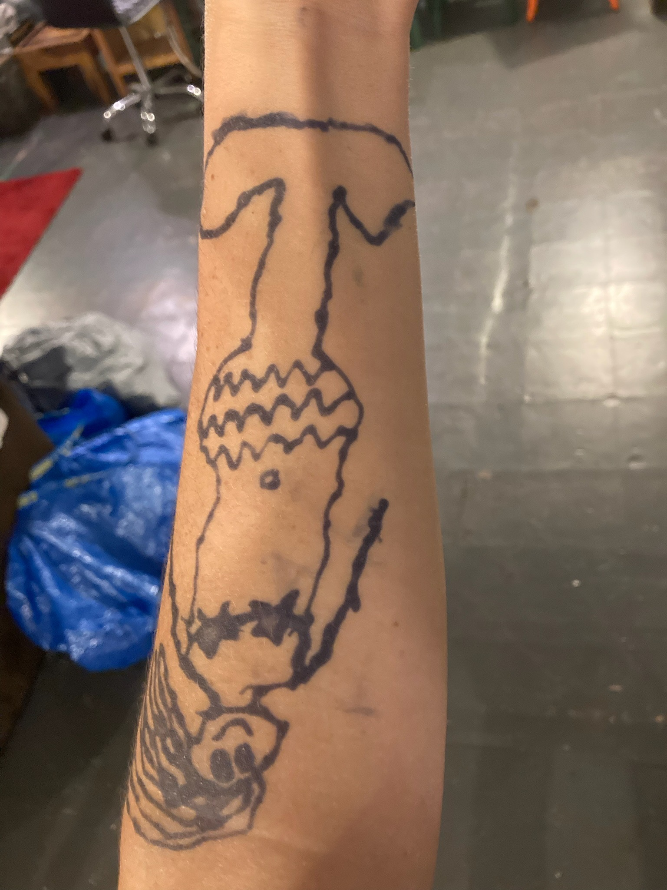 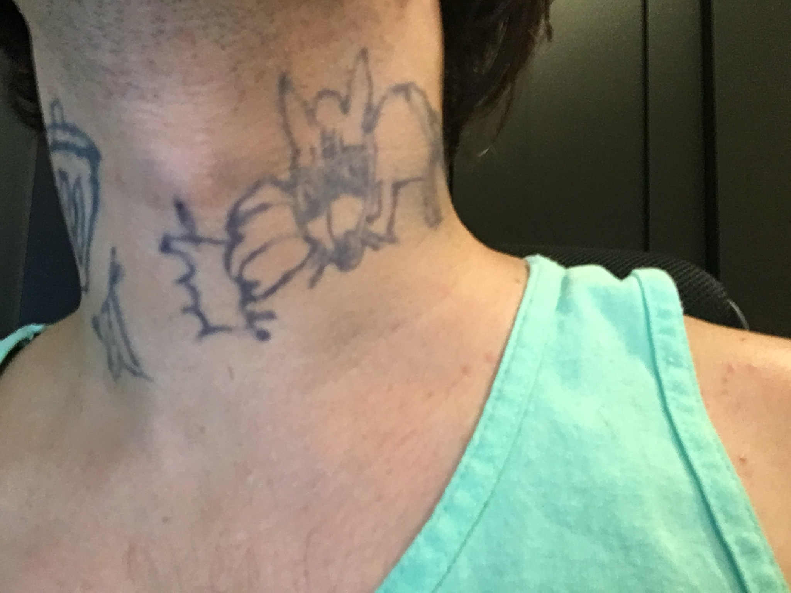